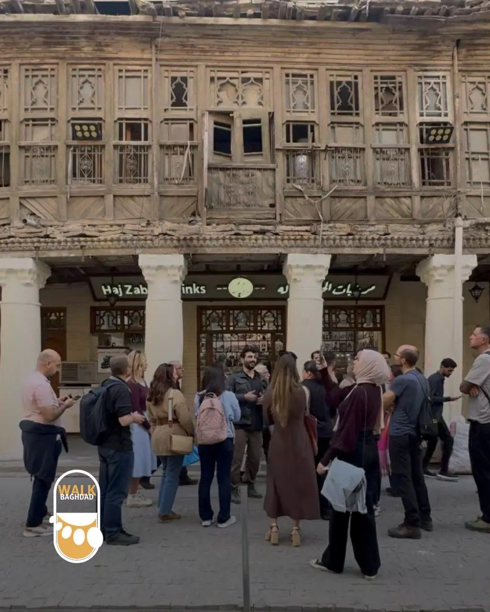
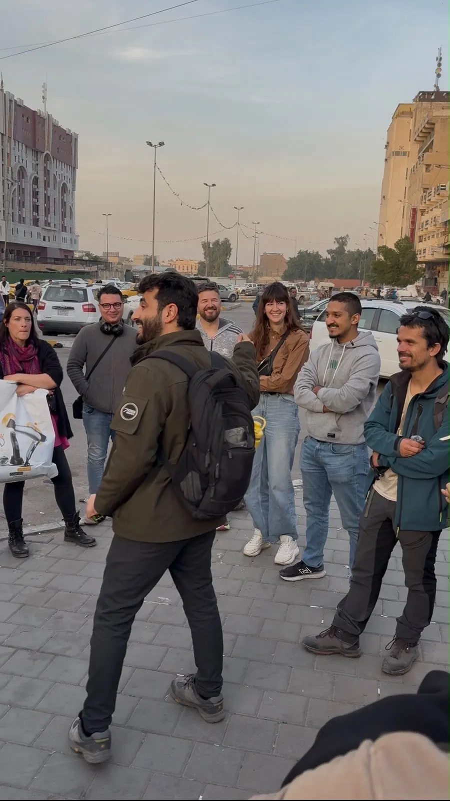
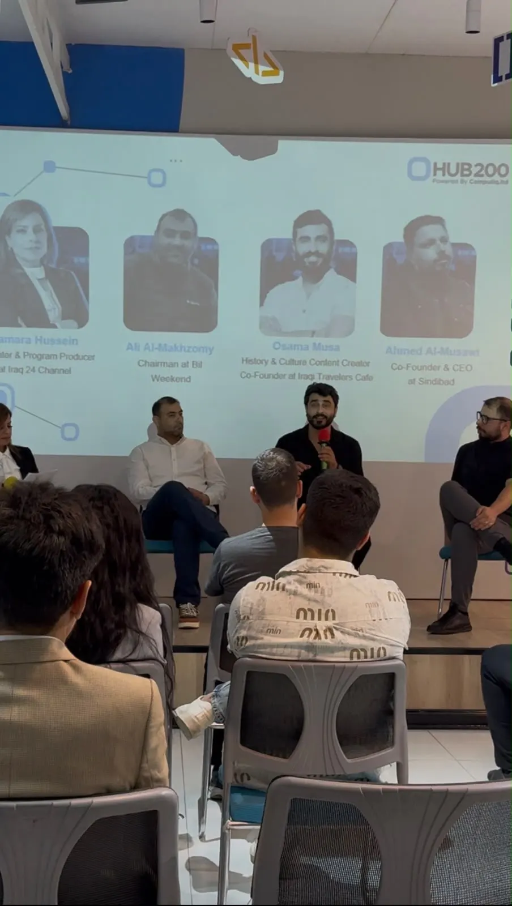
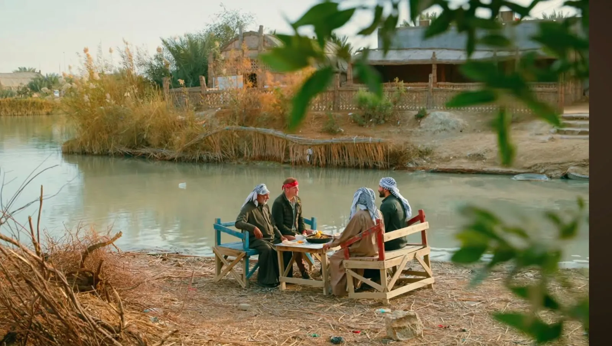
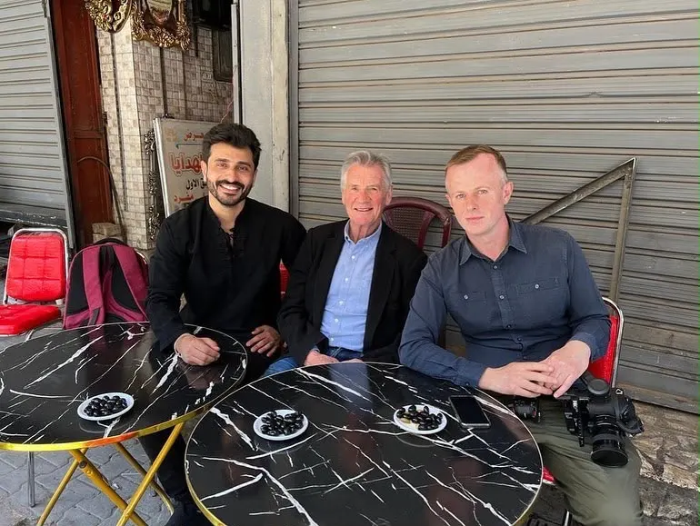

Osamah Mousa
Connecting people. Bridging cultures. Inspiring understanding.
Follow the river down
Connecting people. Bridging cultures. Inspiring understanding.

Osamah Mousa connects people across cultures for a living — as a media and strategic communications specialist, filmmaker, content creator, and documentary production facilitator based between Iraq and the world.
Since 2019, his work through Iraqi Travellers Cafe has promoted intercultural dialogue, responsible tourism, and people-to-people diplomacy, connecting international visitors with local communities across Iraq. That same instinct for research and storytelling now runs through everything he does: from producing documentary-style content on culture and heritage, to writing and directing his own short film, to facilitating international productions like Best Ever Food Review Show and DW as they capture authentic stories on the ground.
Beyond media, he designs cultural initiatives, educational programs, and international exchange activities that turn curiosity into cooperation, built on a background that pairs an analytical, research-driven mind (a Master's in Biochemistry) with a communicator's instinct for story.
To connect people, bridge cultures, and inspire understanding through media, strategic communication, documentary storytelling, cultural research, and international collaboration — creating authentic stories that foster dialogue, challenge stereotypes, and strengthen connections between communities across the world.
Media and strategic communications, content creation, cross-cultural dialogue, documentary production, and leadership, each feeding the same current.
Through ITC, Osamah co-organized international cultural exchange events that extended the initiative's mission beyond Iraq, creating platforms for dialogue and meaningful connection.
Co-organized a cultural exchange event promoting intercultural dialogue and global citizenship.
Co-organized an international community event connecting participants from diverse cultures.
Co-organized a cultural gathering strengthening ties between Iraqi and international communities.


Supported one of the world's leading travel and food documentary productions through local coordination, cultural guidance, logistical facilitation, and production support, helping the team capture authentic stories from Iraq, from Baghdad's tea houses to the marshlands of the south.
Featured in an international television program discussing Iraq, tourism, and cultural understanding.


Shared insights on Iraq, cultural exchange, and community initiatives with one of Germany's leading international broadcasters.
Featured in discussions highlighting Iraqi society, tourism, and intercultural communication.


Coordinated the Iraq visit of Michael Palin, internationally renowned British travel documentarian, broadcaster, author, and former Monty Python member, providing local logistical and cultural coordination during the filming of his travel documentary in Iraq.

Co-founded one of Iraq's leading non-profit cultural exchange initiatives, dedicated to promoting intercultural dialogue, sustainable tourism, and meaningful connections between Iraqis and international visitors. What began as informal gatherings has grown into a recognized community platform welcoming a genuinely global membership, detailed further under Key Achievements above.

Founded the Baghdad Walking Tour, recognized as the first walking tour initiative of its kind in Iraq. The project introduced a new approach to experiencing Baghdad by combining history, architecture, culture, and everyday life through guided walking experiences connecting local communities with international visitors.

Led the expansion of Iraqi Travellers Cafe beyond Iraq by co-organizing international cultural exchange events in Delhi, Berlin, and Houston. These events strengthened international partnerships, encouraged intercultural dialogue, and promoted a positive image of Iraq through people-to-people connections.

His debut short documentary, telling the remarkable story of Pan, a Dutch traveler who returned to Iraq after nearly fifty years to reunite with his Iraqi friends. Written, directed, and produced by Osamah, the film highlights the enduring power of friendship and the human stories that connect people across generations and borders.

Facilitated and supported international documentary productions filmed in Iraq by providing local coordination, cultural guidance, logistical support, and community engagement, helping international media teams capture authentic stories that showcased Iraq's people, heritage, and culture to a global audience.